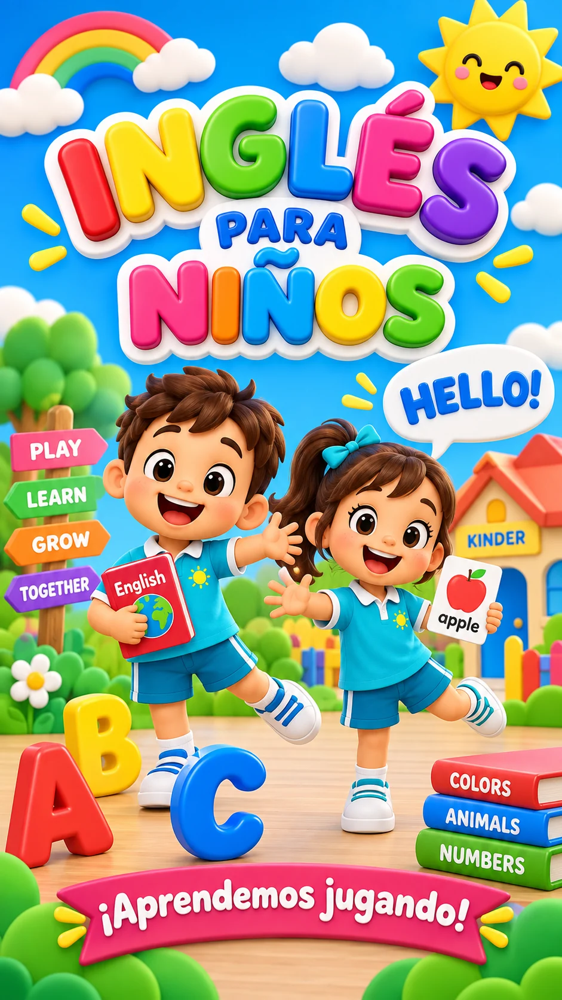
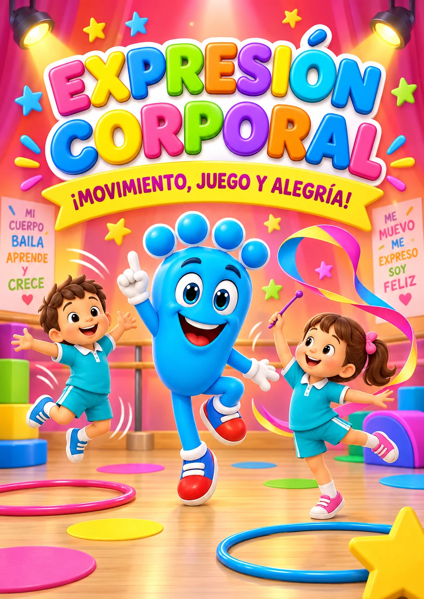
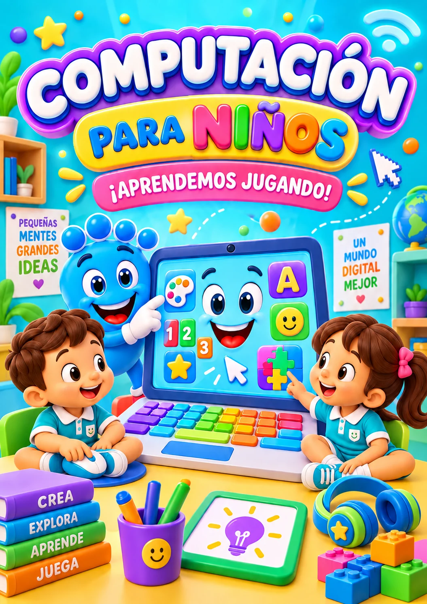

Llegan juntos
Los recibimos en Paunero 2117 y conocen el espacio con tranquilidad.
18 meses a 4 años · San Miguel
El mejor lugar después del hogar.
La visita está pensada para que conozcan cómo acompañamos a cada niño. Mientras conversás con Rosana, tu peque puede acercarse a su salita, a sus seños y compartir una hermosa actividad.


Una primera experiencia juntos
La visita les permite conocer el lugar, conversar con Rosana y ver cómo vive tu peque su primera experiencia en el jardín.
Los recibimos en Paunero 2117 y conocen el espacio con tranquilidad.
Una seño lo espera para recibirlo con una propuesta preparada especialmente para la visita.
Preguntás todo lo que necesitás saber para decidir con más seguridad.
Si durante la entrevista deciden sumarse, tu peque recibe su uniforme de regalo.
Experiencias reales
Estas familias compartieron públicamente cómo vivieron el comienzo en Primeros Pasos.
“Nuestra hija lleva un mes en el jardín... y la verdad estamos tan contentos y tranquilos de haber decidido por el mejor lugar. Cada día que pasa la vemos más feliz.”
“Nuestra bebé de un año y nueve meses empezó hace 45 días, se adaptó rapidísimo, va súper contenta y lo más gratificante es verla salir con una sonrisa grande.”
“El tacto, la paciencia y el amor que manejan ese jardín desde la directora hasta los auxiliares es increíble. Súper recomiendo este jardín.”
Rosana los recibe
La visita incluye una charla con Rosana y una primera experiencia de tu peque en el jardín. Así pueden mirar, preguntar y decidir con tranquilidad.
Durante la visita van a poder conocer:

Propuestas con sentido
Lo importante no es acumular actividades. Es que cada propuesta tenga sentido para su edad, despierte curiosidad y le permita ganar confianza.


Juegos, canciones y palabras cotidianas despiertan el oído y acercan otro idioma de manera natural.

Cantar, escuchar y seguir ritmos ayuda a reconocer patrones, expresarse y compartir con otros.

Moverse con intención permite conocer el cuerpo, ganar equilibrio y expresar emociones con confianza.

Tocar la tierra, sembrar y cuidar enseña paciencia, responsabilidad y respeto por la naturaleza.

Propuestas breves y acompañadas acercan la tecnología para crear, resolver y aprender, no sólo para mirar.
La mejor forma de elegir
Tu peque vive una actividad preparada con una seño; vos conversás con Rosana y descubrís si este es el lugar donde puede sentirse cuidado, aprender jugando y crecer con confianza.